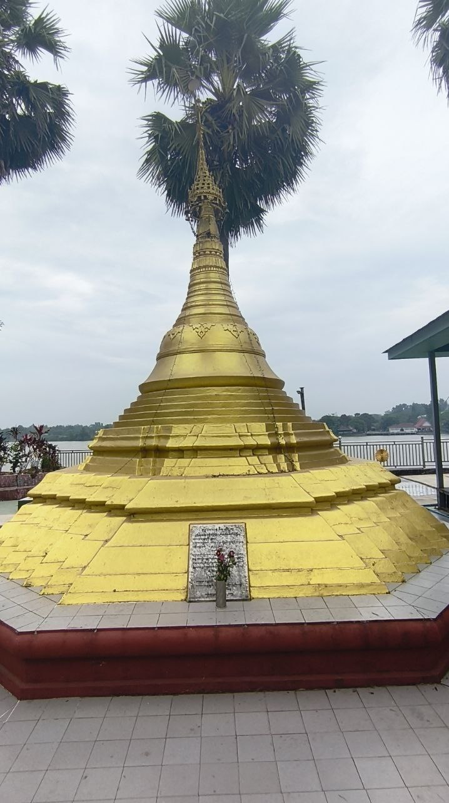
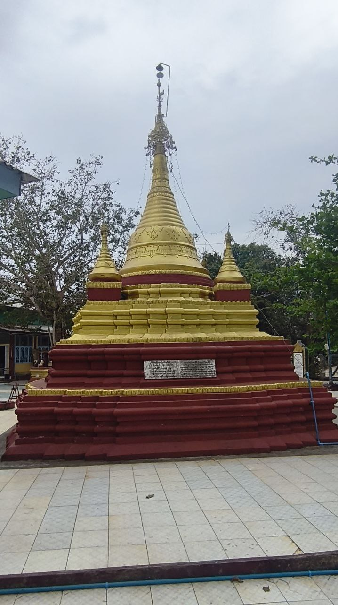
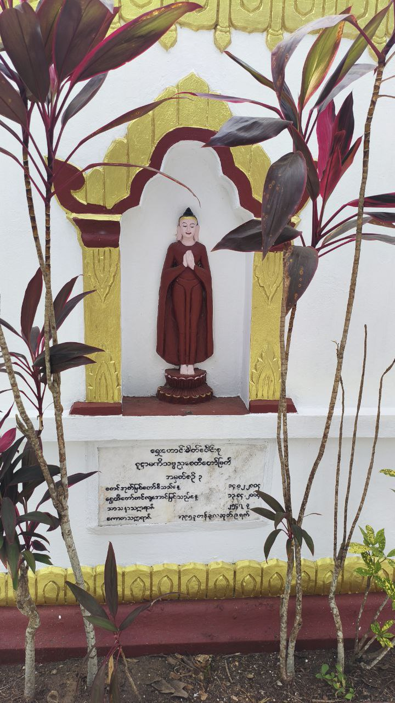

နှီးဘုရားကြီး ကိန်းဝပ်စံပယ်တော်မူရာ ဂန္ဓကုဋိတိုက်အတွင်းနှင့် ပတ်ဝန်းကျင်တွင် ပင်မနှီးဘုရားကြီးကို ဝန်းရံလျက်ရှိသော အရံနှီးဘုရားငယ်များ နှင့် သပ္ပာယ်ကြည်ညိုဖွယ်ကောင်းသော ဗုဒ္ဓရုပ်ပွားတော်များ တည်ရှိကြပါသည်။ နှီးဘုရားကြီး၏ ဘေးဝဲယာနှင့် အနီးတစ်ဝိုက်တွင် ပင်မဘုရားကြီးကဲ့သို့ပင် ဝါးနှီးများဖြင့် အနုစိတ်ရက်လုပ်ကာ ရွှေချပူဇော်ထားသော နှီးဘုရားငယ်အဆူဆူကို ဖူးမြော်နိုင်ပြီး ၎င်းတို့မှာ အလှူရှင်အသီးသီးက သဒ္ဓါကြည်ညိုစွာဖြင့် ထပ်မံပူဇော်ထားခြင်း ဖြစ်ပါသည်။ ထို့ပြင် ဘုရားရင်ပြင်တော်အတွင်း၌ မြန်မာ့ရိုးရာပန်းချီ၊ ပန်းပုလက်ရာများဖြင့် တန်ဆောင်းငယ်များရှိကာ ထိုနေရာများတွင်လည်း ကျောက်စိမ်းရုပ်ပွားတော်များနှင့် ကြေးသွန်းရုပ်ပွားတော်ငယ်များ ကိန်းဝပ်လျက်ရှိပါသည်။ ဤသို့ဖြင့် ပုသိမ်နှီးဘုရားဝန်းသည် ပင်မနှီးဘုရားကြီးအပြင် အခြားသော လက်မှုပညာစုံလင်သည့် ဘုရားငယ်များ စုဝေးရာနေရာတစ်ခုအဖြစ် တည်ရှိနေခြင်း ဖြစ်ပါသည်။


